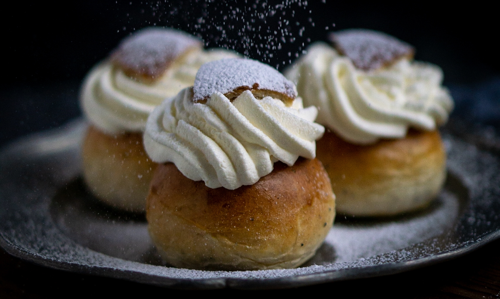
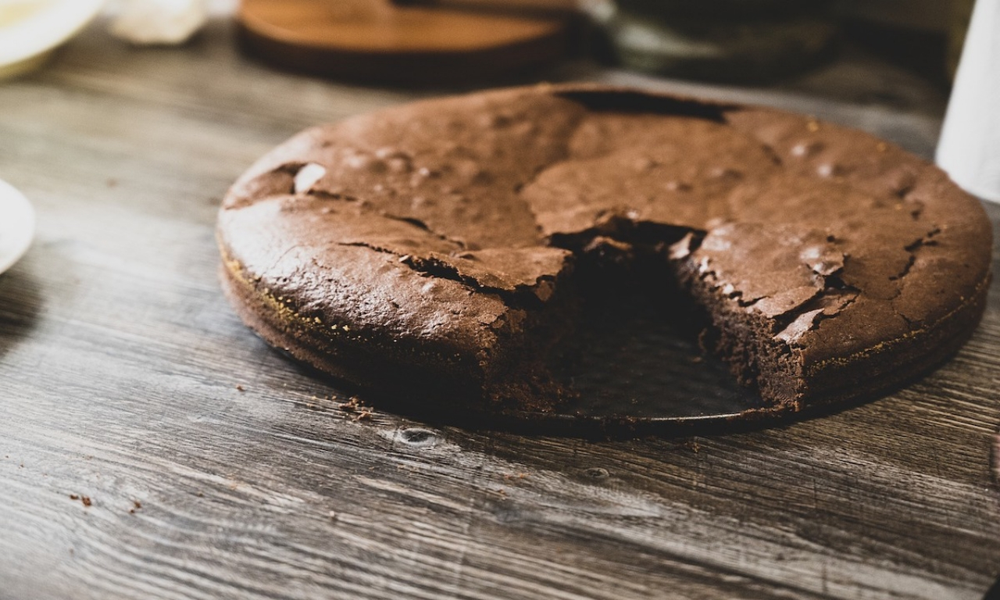
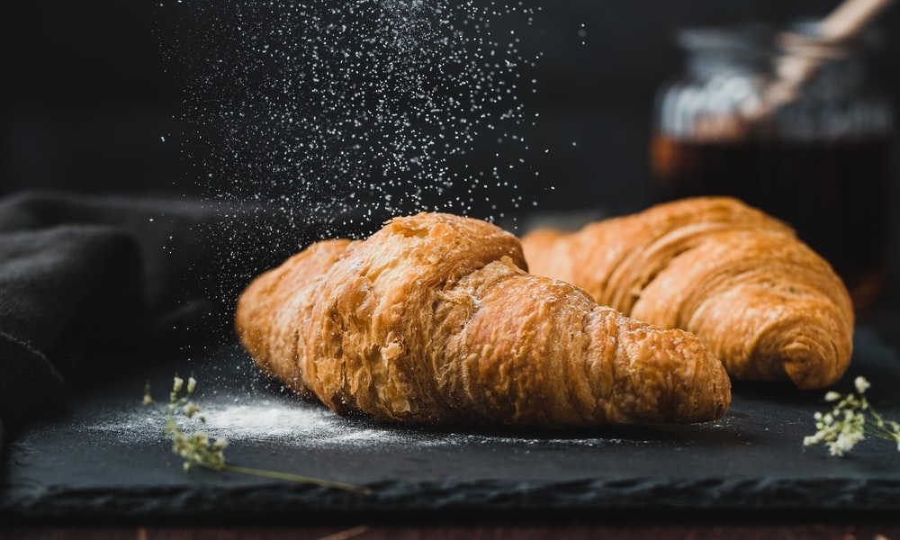

Our Classics
Semlor Buns
A swedish classic, our semlor buns are renowned as being some of the finest across the country and are considered by many of our patrons to be our 'signature' dish.
Kladdkaka
Another traditional dessert, our Kladdkaka is guaranteed to remind you of cozy winter nights with your family. While
Croissants
A recent adventure for Kjiarna, our croissants were introduced by Markus Martinsson, son of founder Gustaff Martinsson, after he spent years learning the traditional french craft.
Our History
Founded by Gustaff Martinsson, in Målmo in 1985, the goal of Kjiarna has goal has always been to refine classic recipes and bring the traditional tastes of Sweden baking into the modern day. Gustaff's son, Markus, has carried on his fathers vision and brought it to new heights across Sweden and Scandanavia.